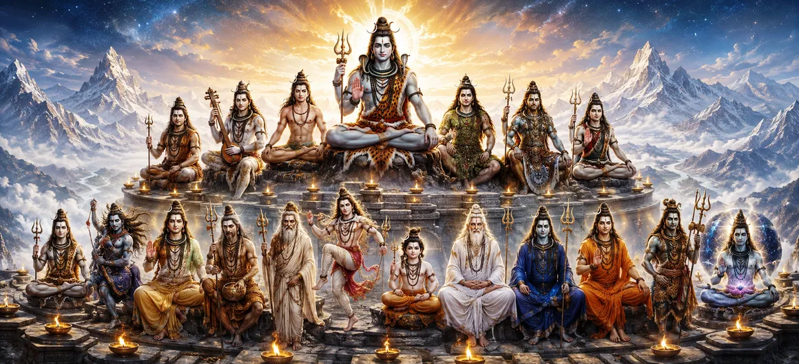

शिव के उन्नीस अवतार
शतरुद्र संहिता का अध्याय 5 एक उल्लेखनीय की ओर मुड़ता है भगवान शिव की दिव्य अभिव्यक्तियों का संग्रह। उन्नीस अवतार असाधारण विविधता को प्रकट करते हैं जिसके माध्यम से सर्वोच्च भगवान ब्रह्मांडीय व्यवस्था की आवश्यकताओं के अनुसार प्रकट होते हैं।
इन अभिव्यक्तियों को अलग-अलग सर्वोच्च नहीं समझा जाना चाहिए हकीकत बल्कि वे एक के ही भिन्न-भिन्न भावों को प्रकट करते हैं महादेव की दिव्य चेतना, सुरक्षा के लिए प्रकट हुई, परिवर्तन, निर्देश, पुनर्स्थापना, और आध्यात्मिक उत्थान।
इन उन्नीस रूपों का चिंतन करने से भक्तों को व्यापकता प्राप्त होती है शिव की असीम प्रकृति और उसके अनेक तरीकों की समझ कौन सी ईश्वरीय कृपा संसार में प्रवेश कर सकती है।
अध्याय 5 की मुख्य बातें
उन्नीस अभिव्यक्तियाँ
शिव के दिव्य अवतारों का एक व्यापक अनुक्रम प्रस्तुत करता है।
एक सर्वोच्च वास्तविकता
एक महादेव की अभिव्यक्ति के रूप में अनेक रूपों को दर्शाता है।
दैवीय सुरक्षा
संरक्षण और पुनर्स्थापन से जुड़ी अभिव्यक्तियों पर प्रकाश डालता है।
आध्यात्मिक निर्देश
यह प्रकट करता है कि कैसे दैवीय अभिव्यक्तियाँ प्राणियों को ज्ञान की ओर ले जाती हैं।
परिवर्तन
बाधाओं को दूर करने और स्थितियों को बदलने की शिव की शक्ति को प्रदर्शित करता है।
असीम कृपा
भक्तों और प्राणियों के बीच शिव की दयालु उपस्थिति पर जोर देता है।
इस अध्याय में उन्नीस अवतार
- 01 प्रथम अवतार →
- 02 दूसरा अवतार →
- 03 तीसरा अवतार →
- 04 चौथा अवतार →
- 05 पाँचवाँ अवतार →
- 06 छठा अवतार →
- 07 सातवाँ अवतार →
- 08 आठवां अवतार →
- 09 नौवां अवतार →
- 10 दसवाँ अवतार →
- 11 ग्यारहवाँ अवतार →
- 12 बारहवाँ अवतार →
- 13 तेरहवाँ अवतार →
- 14 चौदहवाँ अवतार →
- 15 पन्द्रहवाँ अवतार →
- 16 सोलहवाँ अवतार →
- 17 सत्रहवाँ अवतार →
- 18 अठारहवाँ अवतार →
- 19 उन्नीसवाँ अवतार →
प्रथम अवतार
पहली अभिव्यक्ति संपूर्ण अनुसरण किए गए पैटर्न को स्थापित करती है अध्याय: शिव परमात्मा के उपयुक्त रूप में प्रकट होते हैं उद्देश्य पूरा हो रहा है. अवतार शुरुआत का प्रतिनिधित्व करता है विश्व में शिव की शक्ति की एक विशेष अभिव्यक्ति का।
इसकी उपस्थिति दर्शाती है कि ईश्वरीय क्रिया यहीं तक सीमित नहीं है एक ही दृश्यमान रूप. परमात्मा तदनुसार प्रकट हो सकता है परिस्थिति सदैव एक रहते हुए।
दूसरा अवतार
दूसरी अभिव्यक्ति शिव के रहस्योद्घाटन को जारी रखती है विविध दिव्य कार्य. इस प्रपत्र के माध्यम से अध्याय परिवर्तन के प्रति प्रतिक्रिया देने के लिए प्रभु की तत्परता पर जोर देता है सृजन की आवश्यकताएँ.
अवतार भक्तों को सिखाता है कि दैवीय सहायता मिल सकती है ऐसे रूपों में प्रकट होते हैं जिन्हें सामान्य रूप से तुरंत पहचाना नहीं जाता है धारणा.
तीसरा अवतार
तीसरी अभिव्यक्ति दूसरे आयाम को दर्शाती है महादेव की दिव्य गतिविधि. यह इस विचार को पुष्ट करता है कि भगवान के अवतार सार्थक आध्यात्मिक एवं लौकिक के लिए उत्पन्न होते हैं उद्देश्य.
भक्तों को बाहरी दिखावे से परे देखने के लिए प्रोत्साहित किया जाता है एक अवतार का और प्रस्तुत दिव्य उद्देश्य पर चिंतन करें फॉर्म द्वारा.
चौथा अवतार
चौथी अभिव्यक्ति खाते में एक और परत जोड़ती है शिव के अवतार. स्वरूपों की विविधता परिलक्षित होती है सृष्टि के साथ जुड़ने के लिए परमेश्वर की असीमित क्षमता।
यह प्रपत्र साधकों को यह भी याद दिलाता है कि आध्यात्मिक वास्तविकता ऐसा नहीं कर सकती हमेशा परिचित श्रेणियों या अपेक्षाओं तक ही सीमित रहें।
पाँचवाँ अवतार
पांचवीं अभिव्यक्ति शिव के प्रकटीकरण को जारी रखती है असाधारण अवतारी उपस्थिति. यह दूसरे का चित्रण करता है वह परिस्थिति जिसके माध्यम से दैवीय शक्ति सुलभ हो जाती है एक पहचानने योग्य अभिव्यक्ति.
केंद्रीय शिक्षा यह है कि रूप एक माध्यम है दैवीय उद्देश्य, जबकि अंतर्निहित वास्तविकता एक ही रहती है।
छठा अवतार
छठा अवतार शिव की एक और अभिव्यक्ति को प्रदर्शित करता है ब्रह्मांड के साथ दयालु जुड़ाव। परमात्मा के माध्यम से अभिव्यक्ति, पारलौकिक और के बीच की दूरी पहुंच को पाट दिया गया है।
इस अभिव्यक्ति का चिंतन विश्वास को प्रोत्साहित करता है दिव्य मार्गदर्शन की निरंतर उपस्थिति।
सातवाँ अवतार
सातवीं अभिव्यक्ति आगे अनुकूलनशीलता को प्रदर्शित करती है शिव की दिव्य उपस्थिति का. परम भगवान इसके माध्यम से प्रकट हो सकते हैं रूप की सभी सीमाओं से परे रहते हुए विभिन्न रूप।
यह सिद्धांत भक्तों को शिव की कई कहानियों तक पहुंचने में मदद करता है उन्हें एक में सीमित करने का प्रयास करने के बजाय श्रद्धा के साथ बाहरी पैटर्न.
आठवां अवतार
आठवीं अभिव्यक्ति शिव का एक और उदाहरण पेश करती है दुनिया के साथ गतिशील संबंध. ईश्वरीय हस्तक्षेप है मनमाने के बजाय उद्देश्यपूर्ण के रूप में प्रस्तुत किया गया।
अवतार इस पर चिंतन को आमंत्रित करता है कि दिव्य ज्ञान कैसे हो सकता है उन परिस्थितियों के माध्यम से कार्य करना जो मनुष्य के लिए जटिल प्रतीत होती हैं दृष्टिकोण.
नौवां अवतार
नौवीं अभिव्यक्ति अध्याय की केंद्रीय दृष्टि को पुष्ट करती है शिव को असंख्य दिव्य अभिव्यक्तियों का स्रोत माना गया है। प्रत्येक अभिव्यक्ति का शेष रहते हुए अपना कथात्मक महत्व है उसी परम चेतना से जुड़ा हुआ।
भक्तों को अंतर्निहित एकता पर विचार करने के लिए प्रोत्साहित किया जाता है स्पष्ट विविधता.
दसवाँ अवतार
दसवीं अभिव्यक्ति पवित्र की निरंतरता का प्रतीक है अवतारों का क्रम. यह दर्शाता है कि शिव की उपस्थिति कैसी है लौकिक प्रयोजन एवं वैयक्तिक दोनों माध्यमों से समझा जा सकता है आध्यात्मिक अनुभव.
यह प्रपत्र एक और अनुस्मारक के रूप में कार्य करता है कि दैवीय कृपा काम कर सकती है अप्रत्याशित चैनलों के माध्यम से.
ग्यारहवाँ अवतार
ग्यारहवीं अभिव्यक्ति शिव की कहानी को जारी रखती है उद्देश्यपूर्ण अवतार. यह प्रभु की क्षमता को दर्शाता है विभिन्न प्राणियों की आध्यात्मिक आवश्यकताओं के अनुसार प्रकट होना।
इसका गहरा सबक यह है कि आध्यात्मिक प्रगति में बहुत कुछ लग सकता है रूप, लेकिन मंजिल परमात्मा की प्राप्ति ही रहती है।
बारहवाँ अवतार
बारहवीं अभिव्यक्ति इसमें एक और आयाम जोड़ती है अध्याय में शिव की दिव्य विविधता की खोज। यह याद दिलाता है पाठकों, प्रभु की करुणा किसी एक युग तक ही सीमित नहीं है, स्थान, या परिस्थिति।
इसलिए अवतार को इसके भाग के रूप में माना जा सकता है दैवीय प्रतिक्रिया का बड़ा पैटर्न।
तेरहवाँ अवतार
तेरहवीं अभिव्यक्ति शिव की शिक्षा को पुष्ट करती है एक साथ ही पारलौकिक और अंतरंग रूप से भीतर मौजूद है दुनिया.
अभिव्यक्ति से जुड़ी कहानी कुछ और ही प्रदान करती है परमात्मा के बीच संबंध पर विचार करने का अवसर शक्ति और आध्यात्मिक जिम्मेदारी।
चौदहवाँ अवतार
चौदहवीं अभिव्यक्ति पवित्र प्रगति को जारी रखती है शिव की अवतार महिमा की पूर्ण समझ की ओर। यह रूप विशिष्ट ब्रह्मांड का उत्तर देने की भगवान की क्षमता को दर्शाता है और आध्यात्मिक परिस्थितियाँ।
यह भक्तों को ईश्वरीय उद्देश्य को पहचानने के लिए भी प्रोत्साहित करता है अभिव्यक्ति का मार्ग रहस्यमय प्रतीत होता है।
पन्द्रहवाँ अवतार
पंद्रहवीं अभिव्यक्ति दृष्टि में और गहराई जोड़ती है शिव को रक्षक, मार्गदर्शक और ट्रांसफार्मर के रूप में। यह प्रदर्शित करता है वह दैवीय हस्तक्षेप तत्काल और स्थायी दोनों तरह से काम कर सकता है आध्यात्मिक उद्देश्य.
अवतार समर्पण, विश्वास और पर चिंतन को आमंत्रित करता है ईश्वरीय मार्गदर्शन की पहचान.
सोलहवाँ अवतार
सोलहवीं अभिव्यक्ति इसके दूसरे पहलू को प्रदर्शित करती है प्रभु की संसार की परिस्थितियों में प्रवेश करने की असीम क्षमता किसी ऊंचे उद्देश्य के लिए.
ऐसी अभिव्यक्तियों के माध्यम से, भक्तों को यह याद दिलाया जाता है आध्यात्मिक वास्तविकता सक्रिय, दयालु और उत्तरदायी है।
सत्रहवाँ अवतार
सत्रहवीं अभिव्यक्ति का खुलासा जारी है शिव का बहुआयामी दिव्य व्यक्तित्व। अध्याय इनका उपयोग करता है यह दर्शाने के लिए अभिव्यक्तियाँ कि कोई एक विवरण शामिल नहीं हो सकता महादेव की पूर्णता.
यह अहसास आध्यात्मिक समझ में विनम्रता को प्रोत्साहित करता है और भक्ति.
अठारहवाँ अवतार
अठारहवीं अभिव्यक्ति अनुक्रम को उसके करीब लाती है अध्याय के केंद्रीय संदेश को संरक्षित करते हुए पूरा करना: शिव के रूप एक सर्वोच्च वास्तविकता की अनगिनत अभिव्यक्तियाँ हैं।
यह प्रपत्र भक्तों को दैवीय कहानियों तक पहुंचने के लिए प्रोत्साहित करता है चिंतन, श्रद्धा और उनकी गहराई के बारे में जागरूकता आध्यात्मिक अर्थ.
उन्नीसवाँ अवतार
उन्नीसवीं अभिव्यक्ति मुख्य अनुक्रम को पूरा करती है इस अध्याय में प्रस्तुत किया गया है। निष्कर्ष एक बार फिर इंगित करता है भगवान शिव की असीम प्रकृति और कई तरीकों की ओर जिसमें उनकी दिव्य उपस्थिति सुलभ हो जाती है।
उन्नीस अभिव्यक्तियाँ मिलकर उस परमात्मा को प्रदर्शित करती हैं रूप और ईश्वरीय सार विरोधाभासी नहीं हैं। अनेक रूप एक सर्वोच्च चेतना की समृद्धि को प्रकट करें।
अध्याय 5 की मुख्य शिक्षाएँ
एक दिव्य स्रोत
अनेक अभिव्यक्तियाँ अंततः एक सर्वोच्च शिव की ओर इशारा करती हैं।
अनेक दिव्य कार्य
विभिन्न रूप दैवीय गतिविधि के विभिन्न उद्देश्यों को प्रदर्शित करते हैं।
संरक्षण और पुनरुद्धार
दिव्य अभिव्यक्तियाँ प्राणियों की रक्षा करने और व्यवस्था बहाल करने के लिए प्रकट हो सकती हैं।
आध्यात्मिक मार्गदर्शन
अवतार साधकों को गहरी समझ की ओर मार्गदर्शन करते हैं।
बाधाओं का परिवर्तन
शिव की अभिव्यक्तियाँ सीमित परिस्थितियों पर काबू पाने की शक्ति प्रदर्शित करती हैं।
असीम करुणा
ईश्वरीय करुणा अनेक रूपों और परिस्थितियों से होकर प्राणियों तक पहुँचती है।
आध्यात्मिक चिंतन
शिव के उन्नीस अवतार हमें परे देखने के लिए आमंत्रित करते हैं यह विचार कि देवत्व सदैव एक परिचित रूप में प्रकट होना चाहिए। महादेव का वर्णन कई अभिव्यक्तियों के माध्यम से किया जाता है क्योंकि दिव्य चेतना विभिन्न आवश्यकताओं, परिस्थितियों पर प्रतिक्रिया करती है, और आध्यात्मिक उद्देश्य. जब भक्त इन रूपों का चिंतन करते हैं, वे कठिनाई के समय में सुरक्षा को पहचानना सीख सकते हैं, अनिश्चितता के क्षणों में ज्ञान, अवधियों के दौरान परिवर्तन संघर्ष की, और अनुग्रह की जब हृदय समर्पण की ओर मुड़ता है। इसलिए अवतारों की विविधता एक सबक बन जाती है सर्वोच्च की एकता में.
अध्याय 5 का संदेश जीना
उन्नीस अवतारों की शिक्षा को इसमें लाया जा सकता है विभिन्न स्थितियों को पहचानना सीखकर दैनिक जीवन ज्ञान के विभिन्न रूपों की आवश्यकता होती है। भक्त को साहस की आवश्यकता हो सकती है एक क्षण में धैर्य, दूसरे में करुणा, और हानिकारक प्रवृत्तियों का सामना करते समय दृढ़ता।
इन गुणों को असंबद्ध के रूप में देखने के बजाय, अध्याय हमें उन्हें एक की विभिन्न अभिव्यक्तियों के रूप में पहचानने के लिए प्रोत्साहित करता है गहरा आध्यात्मिक अनुशासन. इस प्रकार अनेक अभिव्यक्तियाँ होती हैं संतुलन विकसित करने के लिए शिव एक व्यावहारिक अनुस्मारक बन जाते हैं।
सबसे महत्वपूर्ण बात यह है कि भक्त को एकता को याद रखने के लिए प्रोत्साहित किया जाता है विविधता के पीछे. अलग-अलग रूप, अलग-अलग परिस्थितियाँ, और विभिन्न आध्यात्मिक अभ्यास सभी एक ही ओर इशारा कर सकते हैं सर्वोच्च वास्तविकता.
प्रमुख आध्यात्मिक अवधारणाएँ
शिव की विविध दिव्य अभिव्यक्तियों का एक पवित्र क्रम।
सर्वोच्च भगवान जिनकी दिव्य चेतना कई रूपों में प्रकट होती है।
किसी विशेष प्रयोजन के अनुकूल स्वरूप में दैवी शक्ति का आविर्भाव।
दिव्य सद्भाव जो अस्तित्व के क्रम को बनाए रखता है और पुनर्स्थापित करता है।
दयालु आध्यात्मिक शक्ति जिसके माध्यम से शिव प्राणियों का मार्गदर्शन और उत्थान करते हैं।
यह अहसास कि एक सर्वोच्च वास्तविकता से कई अभिव्यक्तियाँ उत्पन्न हो सकती हैं।
अध्याय सारांश
शतरुद्र संहिता अध्याय 5 उन्नीस अवतार प्रस्तुत करता है भगवान शिव के बारे में और पाठक की समझ का विस्तार करता है महादेव ब्रह्मांडीय व्यवस्था के भीतर कई तरीकों से प्रकट होते हैं। अध्याय इस बात पर जोर देता है कि ये विविध अभिव्यक्तियाँ होती हैं अलग-अलग सर्वोच्च वास्तविकताओं का प्रतिनिधित्व नहीं करते। इसके बजाय, वे हैं एक दिव्य चेतना की अभिव्यक्तियाँ प्रतिक्रिया दे रही हैं विभिन्न आध्यात्मिक और लौकिक परिस्थितियाँ। के माध्यम से उन्नीस रूपों में, भक्त को परमात्मा का चिंतन करने के लिए आमंत्रित किया जाता है सुरक्षा, मार्गदर्शन, परिवर्तन, पुनर्स्थापन, करुणा, और अनुग्रह. अध्याय अंततः विविधता से परे की ओर इशारा करता है शिव की एकता की ओर रूप, पवित्र कथा की तैयारी अगले प्रकटीकरण के लिए, नंदीश्वर का अवतार।
अक्सर पूछे जाने वाले प्रश्न
①शतरुद्र संहिता अध्याय 5 का मुख्य विषय क्या है?
अध्याय उन्नीस अवतारों और अभिव्यक्तियों को प्रस्तुत करता है भगवान शिव के व्यापक आध्यात्मिक महत्व की व्याख्या करता है शिव अनेक रूपों में प्रकट होते हैं।
② भगवान शिव अलग-अलग अवतार क्यों लेते हैं?
अभिव्यक्तियाँ विभिन्न दिव्य प्रयोजनों के अनुसार उत्पन्न होती हैं, सुरक्षा, मार्गदर्शन, परिवर्तन, बहाली सहित, और प्राणियों का आध्यात्मिक उत्थान।
③ क्या उन्नीस अवतार भगवान शिव से अलग हैं?
नहीं, केंद्रीय शिक्षा यह है कि विभिन्न अवतार एक ही सर्वोच्च शिव की विविध अभिव्यक्तियों का प्रतिनिधित्व करते हैं।
④ उन्नीस अवतारों का आध्यात्मिक महत्व क्या है?
वे प्रदर्शित करते हैं कि दैवीय चेतना कैसे प्रतिक्रिया दे सकती है सार रूप में एक रहते हुए ब्रह्मांड की जरूरतों के लिए।
⑤ भक्तों को शिव के विभिन्न रूपों को कैसे समझना चाहिए?
प्रत्येक रूप पर एक विशेष अभिव्यक्ति के रूप में विचार किया जा सकता है दैवीय शक्ति, बुद्धि, सुरक्षा, परिवर्तन, या अनुग्रह, सभी अभिव्यक्तियों के पीछे की एकता को याद करते हुए।
⑥ उन्नीस अवतारों के बाद क्या होता है?
पवित्र कथा अगले अध्याय में जारी है नंदीश्वर का अवतार.
“शिव की अनेक अभिव्यक्तियाँ असीमित तरीकों को प्रकट करती हैं जिसमें एक सर्वोच्च चेतना मार्गदर्शन कर सकती है, सुरक्षा कर सकती है, परिवर्तन करो, और विश्व का उत्थान करो।”
शतरुद्र संहिता के माध्यम से जारी रखें
अध्याय 5 भगवान शिव के उन्नीस अवतारों को प्रस्तुत करता है, महादेव के दिव्य प्रकट होने के कई तरीकों का खुलासा शक्ति और अनुग्रह. जानने के लिए अध्याय 6 को जारी रखें नंदीश्वर का अवतार.